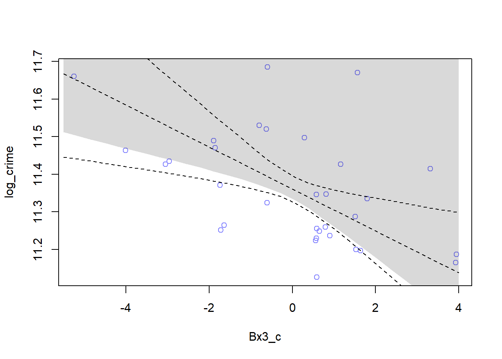
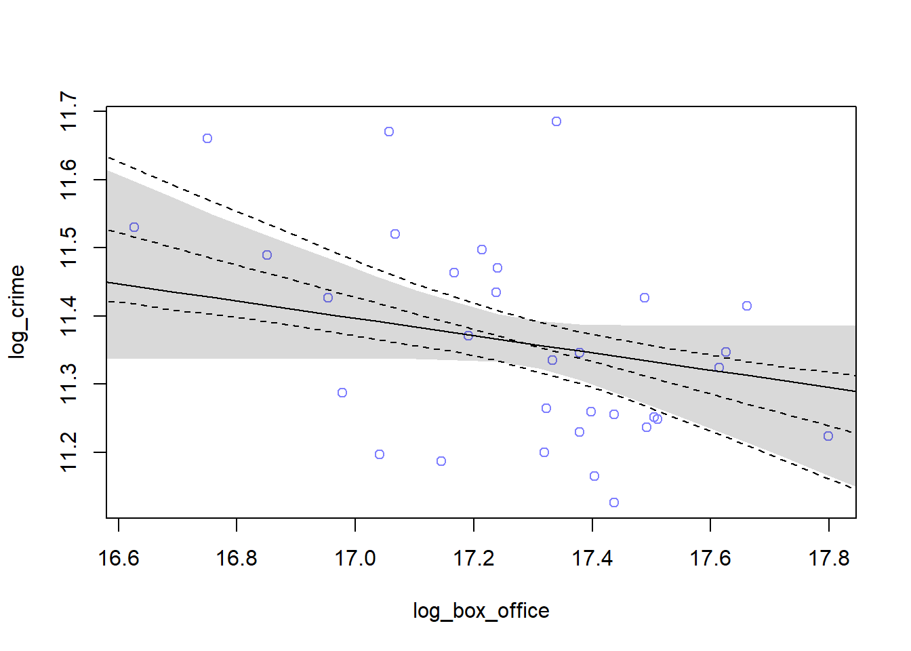

Import values computed from Model Building .
# read files
source(file.path("datasets", "model.R"))It is not apparent which is the better model, since the model weights are approximately the same.
We can conclude that the effect of movie type is as significant as a predictor as the effect of log box office results and the effect of movie scores on crime rates.
# compare models
compare(m1, m2) ## WAIC pWAIC dWAIC weight SE dSE
## m1 -33.2 6.0 0.0 0.67 10.74 NA
## m2 -31.8 4.6 1.4 0.33 10.80 9.37Merge datasets d1 and d2 to create prediction data.
# combine d1, d2
d = merge(d1,d2)Find significant predictors of Model 1 with summary. As shown below, predictor Bx3_c is the most significant, and hence we will examine the effect of movie type - “Neutral” on log crime cases.
summary(lm(log_crime~ Bx1_c + Bx2_c + Bx3_c, data=d1, x=T))##
## Call:
## lm(formula = log_crime ~ Bx1_c + Bx2_c + Bx3_c, data = d1, x = T)
##
## Residuals:
## Min 1Q Median 3Q Max
## -0.247296 -0.092399 -0.009366 0.049547 0.298875
##
## Coefficients:
## Estimate Std. Error t value Pr(>|t|)
## (Intercept) 11.360622 0.022414 506.863 <2e-16 ***
## Bx1_c -0.033509 0.025013 -1.340 0.1911
## Bx2_c -0.009411 0.025216 -0.373 0.7118
## Bx3_c -0.056353 0.026329 -2.140 0.0412 *
## ---
## Signif. codes: 0 '***' 0.001 '**' 0.01 '*' 0.05 '.' 0.1 ' ' 1
##
## Residual standard error: 0.1268 on 28 degrees of freedom
## Multiple R-squared: 0.3669, Adjusted R-squared: 0.299
## F-statistic: 5.408 on 3 and 28 DF, p-value: 0.004604Plot the model-averaged predictions of this model set.
# Model 1
Bx3_c.seq <- seq(from=-5.5, to=4, length.out = 30)
d.predict <- list(
log_crime = rep(0,30),
Bx1_c = rep(0,30),
Bx2_c = rep(0,30),
Bx3_c = Bx3_c.seq,
log_box_office = rep(0,30),
score.s = rep(0,30),
Bscore.s = rep(0,30)
)
pred.m <- link( m1 , data=d.predict )## [ 100 / 1000 ]
[ 200 / 1000 ]
[ 300 / 1000 ]
[ 400 / 1000 ]
[ 500 / 1000 ]
[ 600 / 1000 ]
[ 700 / 1000 ]
[ 800 / 1000 ]
[ 900 / 1000 ]
[ 1000 / 1000 ] mu <- apply( pred.m , 2 , mean )
mu.PI <- apply( pred.m , 2 , PI )
plot( log_crime ~ Bx3_c , d , col=rangi2 )
lines( Bx3_c.seq , mu , lty=2 )
lines( Bx3_c.seq, mu.PI[1,] , lty=2 )
lines( Bx3_c.seq , mu.PI[2,] , lty=2 )
log_crime.ensemble <- ensemble( m1 , m2 ,data=d.predict )## Constructing posterior predictions## [ 100 / 1000 ]
[ 200 / 1000 ]
[ 300 / 1000 ]
[ 400 / 1000 ]
[ 500 / 1000 ]
[ 600 / 1000 ]
[ 700 / 1000 ]
[ 800 / 1000 ]
[ 900 / 1000 ]
[ 1000 / 1000 ]## Constructing posterior predictions## [ 100 / 1000 ]
[ 200 / 1000 ]
[ 300 / 1000 ]
[ 400 / 1000 ]
[ 500 / 1000 ]
[ 600 / 1000 ]
[ 700 / 1000 ]
[ 800 / 1000 ]
[ 900 / 1000 ]
[ 1000 / 1000 ] mu <- apply( log_crime.ensemble$link , 2 , mean )
mu.PI <- apply( log_crime.ensemble$link , 2 , PI )
lines( Bx3_c.seq , mu )
shade( mu.PI , Bx3_c.seq )
Find significant predictors of Model 2 with summary. As shown below, predictor log_box_office is the most significant, and hence we will examine the effect of log box office results on log crime cases.
summary(lm(log_crime~ log_box_office + score.s + Bscore.s, data=d2, x=T))##
## Call:
## lm(formula = log_crime ~ log_box_office + score.s + Bscore.s,
## data = d2, x = T)
##
## Residuals:
## Min 1Q Median 3Q Max
## -0.23284 -0.08889 -0.00420 0.07127 0.35327
##
## Coefficients:
## Estimate Std. Error t value Pr(>|t|)
## (Intercept) 15.29620 1.66635 9.179 6.15e-10 ***
## log_box_office -0.22799 0.09635 -2.366 0.0251 *
## score.s -4.17023 7.02684 -0.593 0.5576
## Bscore.s 0.23202 0.40650 0.571 0.5727
## ---
## Signif. codes: 0 '***' 0.001 '**' 0.01 '*' 0.05 '.' 0.1 ' ' 1
##
## Residual standard error: 0.134 on 28 degrees of freedom
## Multiple R-squared: 0.2928, Adjusted R-squared: 0.217
## F-statistic: 3.863 on 3 and 28 DF, p-value: 0.01976Plot the model-averaged predictions of this model set.
# Model 2
log_box_office.seq <- seq(from=16, to=18, length.out = 30)
d.predict <- list(
log_crime = rep(0,30),
Bx1_c = rep(0,30),
Bx2_c = rep(0,30),
Bx3_c = rep(0,30),
log_box_office = log_box_office.seq,
score.s = rep(0,30),
Bscore.s = rep(0,30)
)
pred.m <- link( m2 , data=d.predict )## [ 100 / 1000 ]
[ 200 / 1000 ]
[ 300 / 1000 ]
[ 400 / 1000 ]
[ 500 / 1000 ]
[ 600 / 1000 ]
[ 700 / 1000 ]
[ 800 / 1000 ]
[ 900 / 1000 ]
[ 1000 / 1000 ] mu <- apply( pred.m , 2 , mean )
mu.PI <- apply( pred.m , 2 , PI )
plot( log_crime ~ log_box_office , d , col=rangi2 )
lines( log_box_office.seq , mu , lty=2 )
lines( log_box_office.seq, mu.PI[1,] , lty=2 )
lines( log_box_office.seq , mu.PI[2,] , lty=2 )
log_crime.ensemble <- ensemble( m1 , m2 ,data=d.predict )## Constructing posterior predictions## [ 100 / 1000 ]
[ 200 / 1000 ]
[ 300 / 1000 ]
[ 400 / 1000 ]
[ 500 / 1000 ]
[ 600 / 1000 ]
[ 700 / 1000 ]
[ 800 / 1000 ]
[ 900 / 1000 ]
[ 1000 / 1000 ]## Constructing posterior predictions## [ 100 / 1000 ]
[ 200 / 1000 ]
[ 300 / 1000 ]
[ 400 / 1000 ]
[ 500 / 1000 ]
[ 600 / 1000 ]
[ 700 / 1000 ]
[ 800 / 1000 ]
[ 900 / 1000 ]
[ 1000 / 1000 ] mu <- apply( log_crime.ensemble$link , 2 , mean )
mu.PI <- apply( log_crime.ensemble$link , 2 , PI )
lines( log_box_office.seq , mu )
shade( mu.PI , log_box_office.seq )